The transmitter is the part of the radar that makes the energy. It has to deliver high power, hold a stable phase, and accept the modulation that turns a simple pulse into a precise measuring tool. This chapter covers what a transmitter must do, the difference between coherent and non-coherent operation, the modulator that switches the high voltage, and the pulse compression techniques that let a long pulse resolve targets like a short one.
A radar transmitter generates the RF energy necessary for scanning free space. The often very large amount of energy must be modulated by a pulse from the synchronizer in a specific time pattern, to obtain a time reference for the time measurement of the signal.
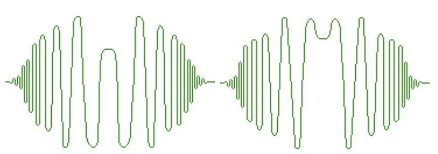
Solid-state transmit and receive modules appear attractive for constructing phased array radar systems. However, microwave tube technology continues to offer substantial advantages in power output over solid-state technology.
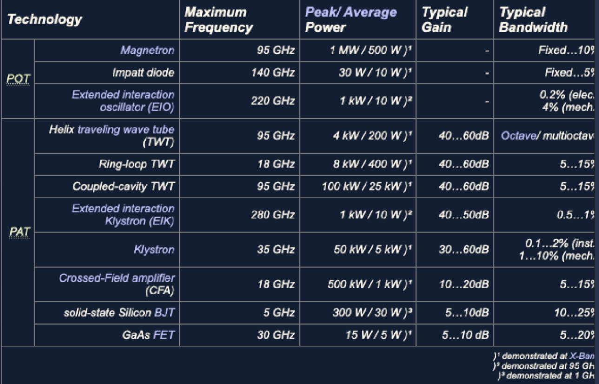
The radar transmitter produces the short-duration high-power RF pulses of energy that are radiated into space by the antenna. The transmitter is required to have the following characteristics: the ability to generate the required mean RF power and peak power, plus:
The radar transmitter is designed around the selected output device, and most of this chapter is devoted to describing output devices.
Simulation of radar systems for test or R&D requires an RF signal generator with a wide range of operating capabilities. The signal source testing the system should have bandwidth and power capabilities beyond those of the actual radar. This area of benchtop signal sources for radar simulation is one Berkeley Nucleonics has focused on for many years. For more on the properties of an RF signal generator, see www.berkeleynucleonics.com.
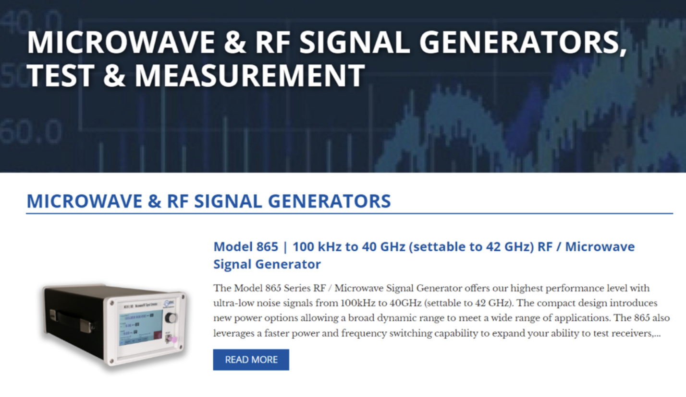
In a pulse radar system, coherence describes the phase relationships between the transmitted and received pulses. Oscillations and electromagnetic waves are described as coherent if their phase relationships are constant. In the case of incoherence, these phase shifts are statistically distributed. Whether a radar is coherent is determined by the type of transmitter. Many types of transmitters can be used in radar systems, which are either coherent, partially coherent, or incoherent.
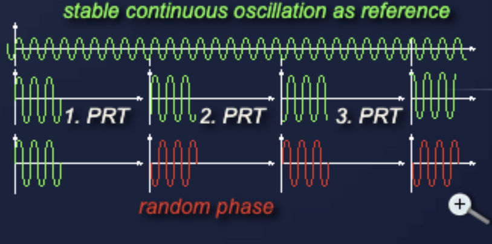
Test and simulation of coherency in radar systems require coherent signal sources with performance ability beyond the desired specifications of the radar system. See the BNC Model 855B phase coherence application note online.
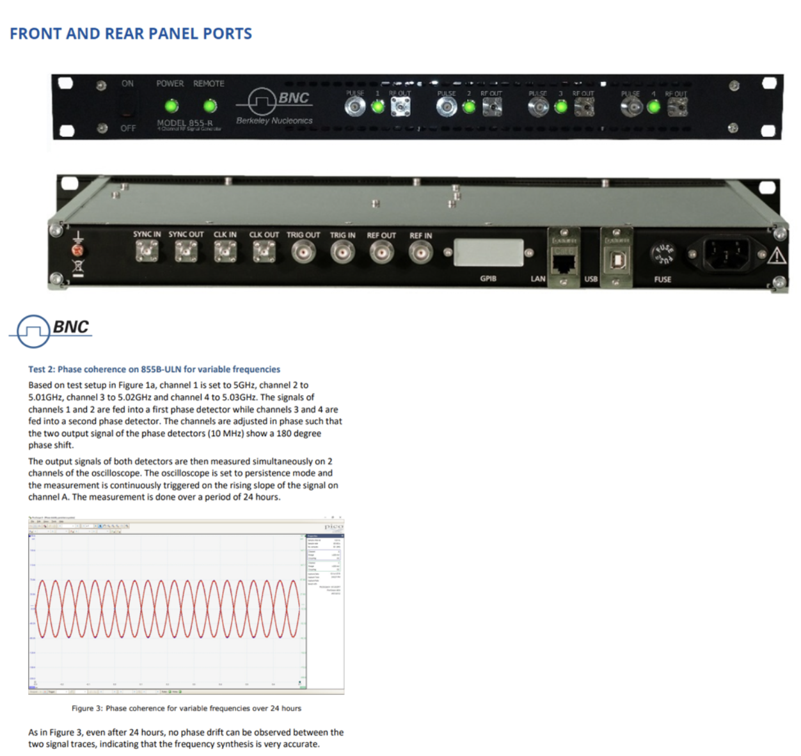
The worst case for coherence is the self-oscillating POT (power oscillator transmitter). The transmitter is switched on and off by a high-voltage modulation pulse, and it oscillates with a different phase shift on each transmission pulse. This phase shift, which occurs at the start of oscillation, is a purely random process and cannot be compensated for. High-voltage pulses are typically cruder in timing properties, which creates system limitations. Test and R&D of various high-voltage properties can be achieved with a benchtop HV pulser.
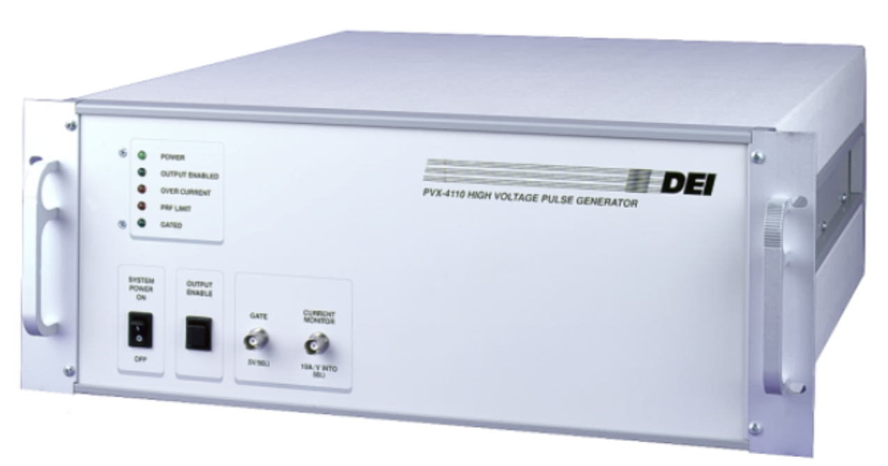
Another transmitter system is the PAT (power amplifier transmitter). Here the transmitter consists of a high-power amplifier fed by a highly stable continuous oscillation from a master generator, which synchronizes a waveform generator. The condition is that this master generator (also called the coherence oscillator) delivers a phase-stable continuous oscillation. The single transmission pulses then consist of partial sections of this continuous oscillation. Radar sets in which the phase relationship is so stable are called fully coherent. The modulation of the power output stage does not affect the phase relation of the transmitted pulse.
By means of a circuit gimmick, even non-coherent radar sets can determine a phase position of the echo signal. Even if the transmitter starts with a random phase, this phase can be conserved for reference purposes by a controlled damped oscillation over an entire reception period. A stable coherent oscillator is forced by the phase of the current transmit pulse to continue oscillating with this phase shift. The next transmitted pulse terminates this coherence, which is why this procedure is also called coherent on receive.
Doppler frequencies fall in the lower audio range. With the short dwell time on target, only a few hits can be achieved by surveillance radar, which gives only very few (often only one) oscillation periods of the Doppler frequency to be measured. This is far too little to measure directly as an oscillation. The radar must therefore measure the phase changes from pulse to pulse in order to detect a Doppler frequency.
The most important advantage of coherent radar systems is that even very small phase shifts of the echo signal are detectable, and the Doppler effect can be used to reduce the influence of fixed clutter. Coherent radar also have a better signal-to-noise ratio than non-coherent systems.
The oscillator tube of the transmitter is keyed by a high-power DC pulse of energy generated by a separate unit called the modulator. The radar modulator generates a high voltage for the transmitter tube for the duration of the transmitting pulse. It practically only switches on the anode voltage for the time of the transmitting pulse. Because of this switching function, it is sometimes called a keyed on/off radar modulator.
Such a modulator is often used to drive self-oscillating high-power generators like magnetrons. High-power amplifiers equipped with cross-field amplifiers (amplitrons) also require such a modulator, since they may only receive high voltage for the duration of the transmit pulse.
This modulator uses a pulse-forming network (PFN) to store energy. The PFN is charged to twice the voltage of the high-voltage power supply on the charging path, with the aid of the magnetic field of the charging choke. This choke simultaneously limits the charging current. A charging diode is inserted to prevent the PFN from discharging through the internal resistance of the power supply after charging. The hydrogen thyratron operates as an electronic switch and is controlled by a short trigger. The pulse transformer adjusts the impedances during discharging.
The function of the thyratron is to act as an electronic switch that requires a positive trigger of only 150 volts. It requires a sharp leading edge for the trigger pulse and depends on a sudden drop in anode voltage to terminate the pulse and cut off the tube. The trigger pulse initiates ionization of the complete thyratron, allowing conduction from the charged PFN through the pulse transformer. The output pulse is then applied to a self-oscillating stage, such as a magnetron.
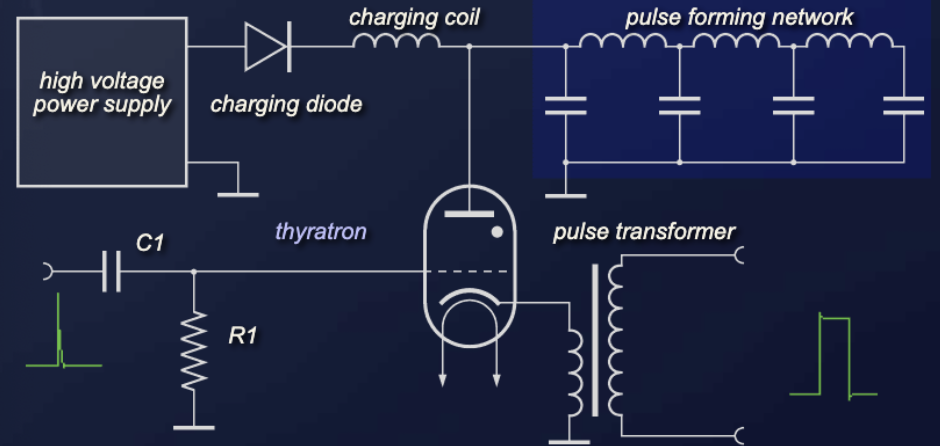
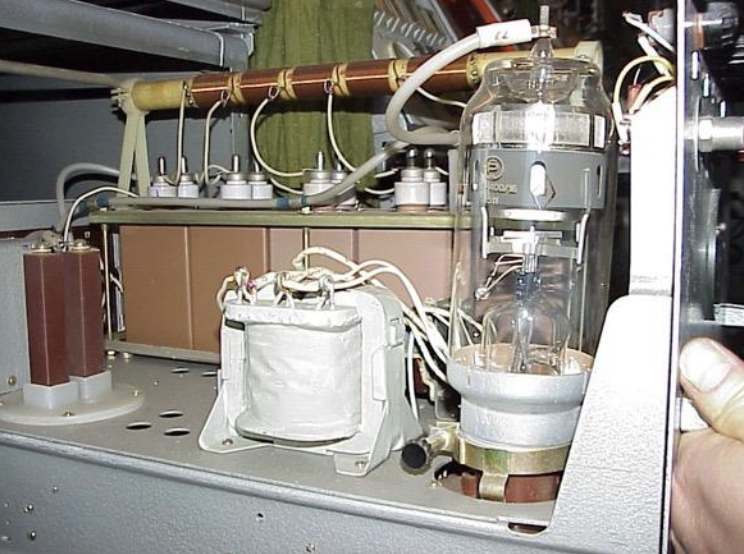
Assume that initially there is no charge on the circuit and the thyratron is an open switch. Once the power supply is switched on, current flows through the charging diode and the charging coil and charges the capacitors of the pulse-forming network. The coils of the PFN are not yet functional. The induction of the charging impedance offers high inductive resistance and builds up a strong magnetic field. The charging of the capacitors follows an exponential function.
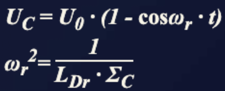
When the capacitors are charged to the power supply voltage, the current decreases and the magnetic field breaks down. The breaking-down magnetic field induces an additional voltage that continues charging the capacitors up to double the power supply voltage. The charging diode cuts off the reverse current direction, so the energy remains stored in the capacitors.
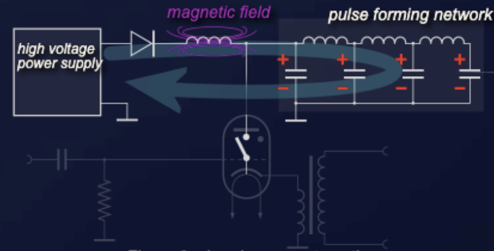
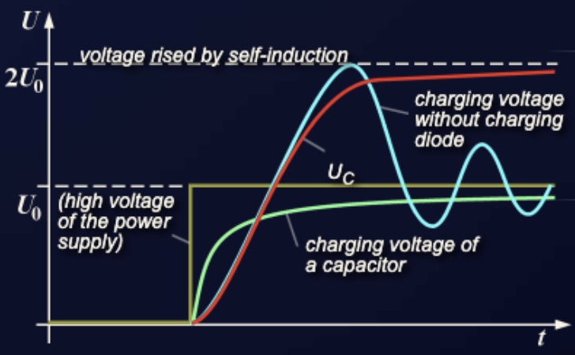
When a positive trigger pulse arrives at the grid of the thyratron, the tube ionizes and causes the pulse-forming network to discharge through the thyratron and the primary of the pulse transformer. The fired thyratron grounds the pulse line at the charging coil and the charging diode. A current flows for the duration tau through the pulse transformer primary coil to ground and through the conducting thyratron to the other side of the PFN. The high-voltage pulse for the transmitting tube can be taken from the secondary coil of the pulse transformer. If the oscillator and pulse transformer circuit impedance is properly matched to the line impedance, the voltage pulse across the transformer primary coil equals one-half of the voltage to which the line was initially charged.
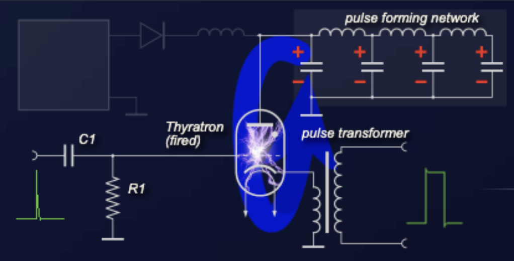
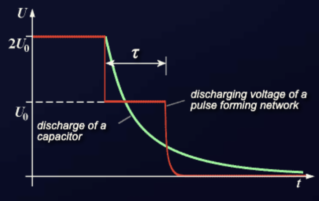
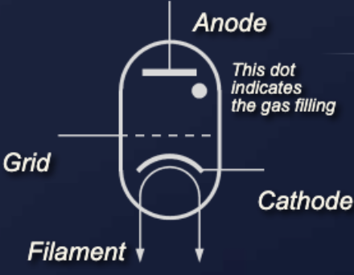
A typical thyratron is a gas-filled tube for radar modulators. Its function is to act as a switch to turn a pulse on and off at the transmitter in response to a control signal.
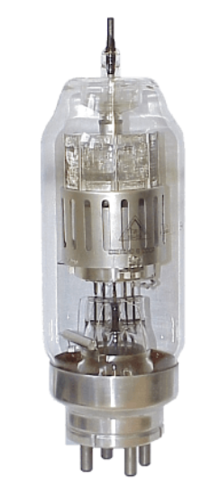
The grid has complete control over the initiation of cathode emission over a wide range of voltages. The anode is completely shielded from the cathode by the grid, so effective grid action results in very smooth firing over a wide range of anode voltages and repetition frequencies. Unlike most other thyratrons, the positive grid-control characteristic ensures stable operation, and deionization time is reduced by using the hydrogen-filled tube.
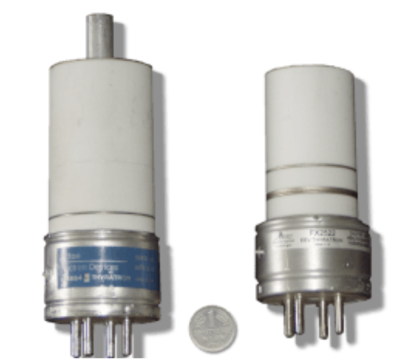
A trigger pulse ionizes the gas between the anode and cathode. The anode current stops only when the high voltage is removed or reduced below the level where electrons no longer have enough energy to produce gas ionization. Only when the production of positive ions stops can the grid regain control. Because of the very high anode voltage, the anode is usually attached at the upper end of the glass bulb. By the ionized gas, a thyratron glows in the conducting condition like a glow lamp.
Thyratrons could be a source of X-rays when using extremely high anode voltage. This X-ray interference is often cited as a cause of later cancers in radar soldiers exposed to the radiation unprotected. In modern radar, thyratrons are no longer used; their function is completely replaced by semiconductor devices such as thyristors or triacs.
In a fully coherent radar, all the necessary clocks, pulses, gates, and frequencies are derived from the highly stable oscillation of a master oscillator and are synchronous with its oscillation. All derivative frequencies have a fixed phase relationship to this one master oscillator.
The fundamental feature is that all signals are derived at low level and the output device serves only as an amplifier. All signals are generated by one master timing source, usually a synthesizer, which provides optimum phase coherence for the whole system. The output device would typically be a klystron, TWT, or solid-state amplifier. Fully coherent radar exhibit none of the drawbacks of pseudo-coherent radar.
In radar, coherence has a feature very different from optics. In optics one speaks of a coherence length, within which interference is possible. In fully coherent radar this coherence length is practically endless: the master oscillator is like a continuously oscillating dipole, from which a small section is always cut and used as a transmission pulse. Unwanted phase jumps and polarity changes are not possible within the transmitter. In a satellite radar, all echo signals from the same distance are coherent with each other and with the transmission frequency, regardless of whether they come from different pulse periods or even from a previous earth orbit.
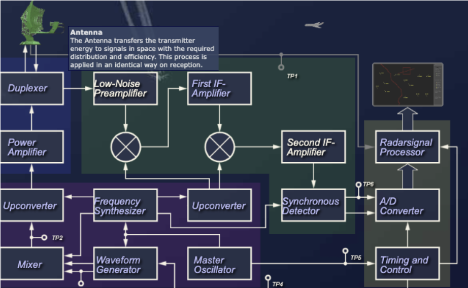
The PSR transmitter of the ATC radar ASR-E (manufacturer: EADS) operates in the S-band (2.7 to 2.9 GHz) and is solid state. It comprises four clusters, each containing eight identical power modules. BITE and status information are displayed on the transmitter front panel and at the operator workstation. The modules can be replaced during transmitter operation (hot replacement) without disconnecting any cables.
All high-power transistors are protected against consequential damage. The availability of the transmitter is nearly 100 percent because of its graceful degradation capability. The unserviceability of one or more power modules will not cause the complete loss of the transmitter, only a temporary slight reduction in performance. Driver and power supply modules are also redundant.
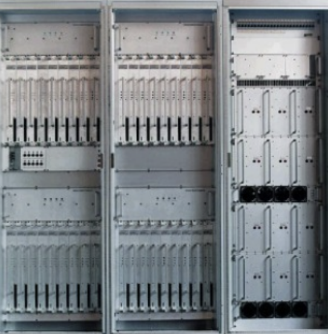
Solid-state transmitters have been used in radar sets in recent years. At constant phases, several MESFET power amplifiers operate in parallel using simple power splitters and adders. The high performance is assembled from many low-power amplifier modules fed in phase by power splitters, whose output powers are summed in phase to the complete transmit power. To achieve adequate range with relatively low pulse power, the pulses are often intra-pulse modulated. GaAs-MESFETs are increasingly used in solid-state high-power amplifiers. MMIC technology (monolithic microwave integrated circuit) is a semiconductor process that obtains active elements on the same substrate and can be used up to very high frequencies.
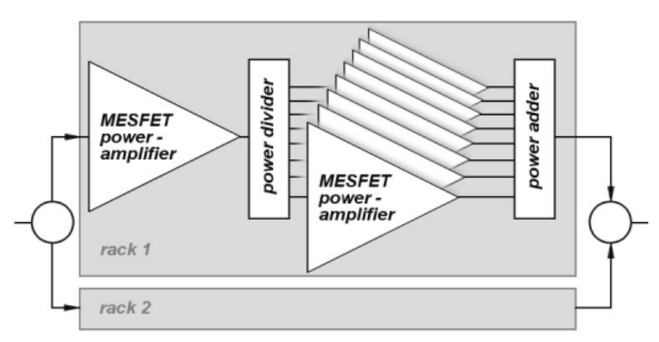
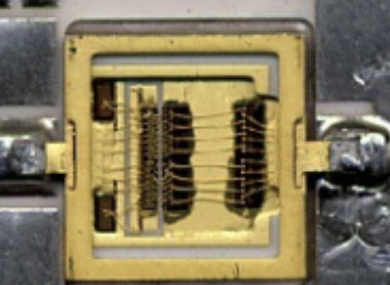
The inner structure of the transmitted signal is usually called the radar waveform. The general term includes both very simple pulse modulation (keyed on/off modulation) and nonlinearly internally modulated transmit pulses generated in a complicated manner. These signals may have a complex structure for a pulse compression radar. In general, all modulations used in continuous wave (CW) radar can also be used within the short or long pulse of a pulse radar.
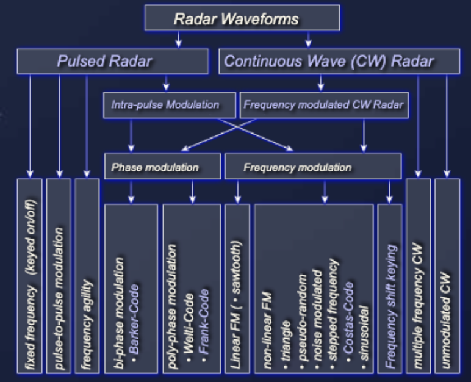
A waveform generator generates the transmitting signal on an IF frequency. It permits generation of predefined waveforms by driving the amplitudes and phase shifts of carried microwave signals. SAW devices, which were the mainstay of pulse compression in the 1980s, were also the prime mechanism for waveform generation when used as expanders. Since these waveform signals are also used as a reference for the receiver channels, there are high requirements for time and frequency stability.
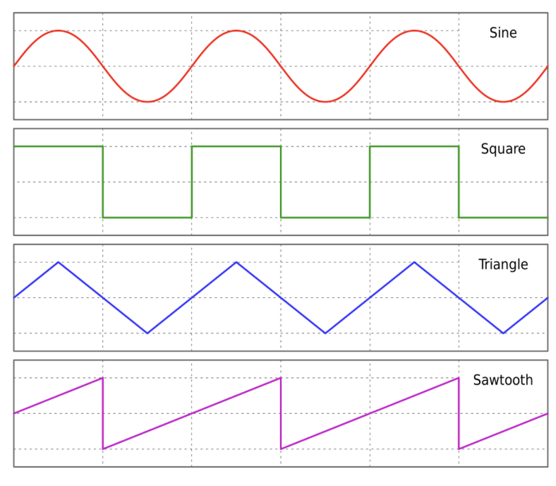
Digital waveform generation (DWG) is a memory-based arbitrary waveform generator (AWG). The desired waveform may be described by a mathematical function, and each discrete value of the function is stored as a digital word in memory. The memory is counted using the system clock and provides the values continuously at the output, where they are converted to an analog voltage. The individual time values in quick succession give the synthesized waveform.
The final waveform is constructed of a number of discrete voltage steps. Its values of amplitude and phase are stored in programmable memories. A change of waveform is possible by adjusting the settings of the arbitrary generator or loading new waveforms into its memory. See the Berkeley Nucleonics Model 765 arbitrary waveform generator for more details on this type of test equipment.
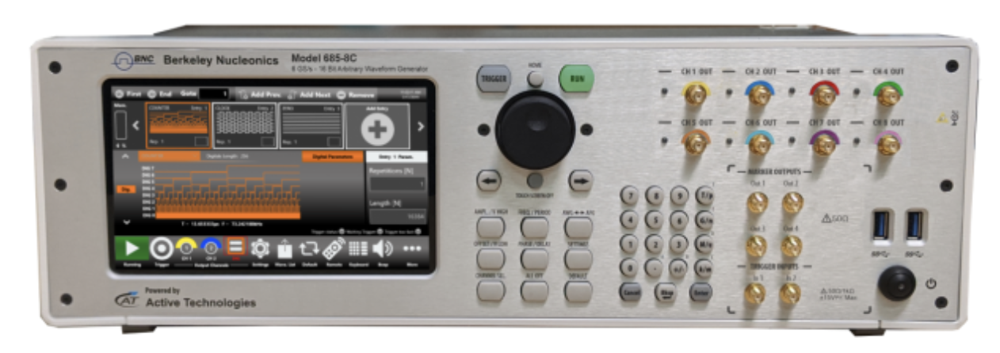
Intra-pulse modulation and pulse compression describe a wave-shaping process produced as a propagating waveform and modified by the electrical network properties of the transmission line. The pulse is frequency or phase modulated, which provides a method to further resolve targets that may have overlapping returns. Pulse compression originated with the desire to amplify the transmitted impulse (peak) power by temporal compression. It combines the high energy of a long pulse width with the high resolution of a short pulse width. Since each part of the pulse has a unique frequency, the returns can be completely separated.
The received echo is processed by the compression filter, which readjusts the relative phases of the frequency components so that a narrow, compressed pulse is again produced. The radar therefore obtains a better maximum range than the conventional radar equation would suggest. The ability of the receiver to improve range resolution over a conventional system is called the pulse compression ratio (PCR). A PCR of 50:1 means the system range resolution is reduced to one-fiftieth of the conventional system.
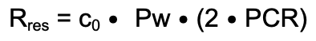
The compression ratio equals the number of sub-pulses in the waveform, that is, the number of elements in the code. The range resolution is proportional to the time duration of one element of the code. The maximum range is increased by the PCR. The minimum range is not improved by the process. The full pulse width still applies to the transmission, which requires the duplexer to remain aligned with the transmitter throughout the pulse, so the minimum range is unaffected.
With pulse compression, a relatively long transmission pulse with comparatively low peak power can achieve a better, longer range than the basic radar equation would suggest. This is because pulse compression can still detect echo signals that have already disappeared into the noise before compression. It is very unlikely that a noise pattern similar to the intra-pulse modulation occurs in such a way that the noise also forms an output signal during compression.
In the radar equation, the advantage of intra-pulse modulation and pulse compression is seen as an increase in range. The pulse compression ratio PCR or N is often entered directly. The pulse compression ratio is sometimes called the pulse compression factor K, because it is entered directly as a factor in the radar equation under the fourth root.
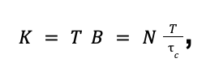
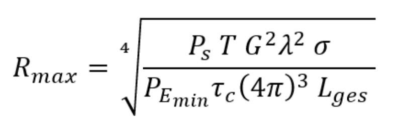
In practice, a largely lossless pulse compression can never be achieved. It is better to use the pulse compression gain, determined by measurement, which takes conversion losses into account. Alternatively, the pulse compression loss can be used separately. The disadvantage of chirp radar is that its blind range is much worse: while the transmitter is working, nothing can be received because the duplexer blocks the receivers. Only with ferrite circulators is it possible to transmit and receive simultaneously, and these can only be used for relatively low transmit powers.
With this method, the transmission pulse is frequency modulated linearly, which keeps the circuit relatively simple. The disadvantage is that interference can be generated relatively easily by so-called sweepers. The transmission pulse is divided into several time intervals of assumed constant frequency. Special filters for the frequency in each time interval each produce an output signal, which is added to an output pulse in a cascade of delay lines and adding stages. An example application of linear frequency modulation is the radar AN/FPS-117. There are two basic ways to realize this technically:
If the entire uncompressed pulse is shifted by the Doppler effect, the filter frequencies no longer fit and losses occur. In practice, several such circuits are often used in parallel, each shifted by a small amount of Doppler frequency, and the signal with the highest signal-to-noise ratio is processed further.
SAW devices (surface acoustic wave) are extensively deployed in current operational pulse compression systems. They are built on a piezoelectric substrate that propagates acoustic waves along the surface. The low speed of the waves means significant delays can be implemented in a small space. The interdigital transducers convert the electrical signal to acoustic waves and are made of thin metallic films deposited on the substrate, easy to fabricate by photographic etching. The frequency response of the delay line depends on the spacing of these transducers. In a compression filter, the highest frequency suffers the largest delay and overlays the lowest frequency, sliding all frequency parts of the input signal into the same range cell. The output of the compression filter consists of the compressed pulse accompanied by responses at other times, called time or range sidelobes.
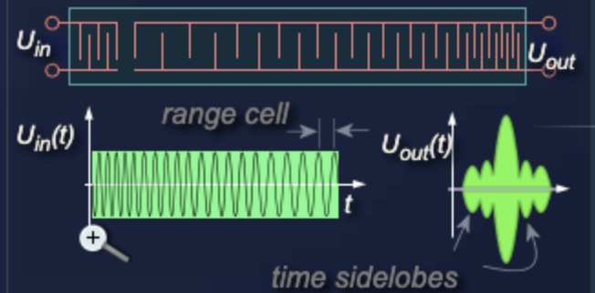
At the output of the compression filter, sidelobes appear in addition to the target pulse. These are offset in time, and therefore in distance, from the main pulse and are called time or range sidelobes. Since both the time and amplitude distances are constant, weighting the signal amplitudes can reduce these sidelobes to an acceptable value. However, if this amplitude weighting is applied only on the receive path, it also causes a deterioration of the filter and reduces the signal-to-noise ratio. The size of these sidelobes is an important parameter of pulse compression radar and can be reduced to about -30 dB by amplitude weighting.
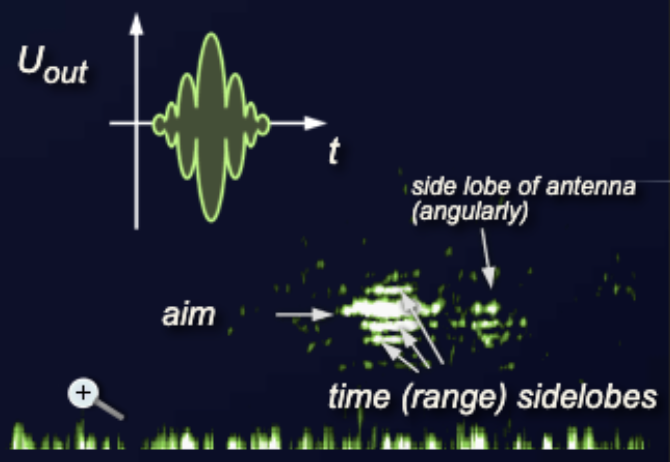
Pulse compression with nonlinear frequency modulation has clear advantages. It no longer requires amplitude weighting for the suppression of time sidelobes, since the form of modulation already fulfills the function of amplitude weighting. A filter adjustment with much steeper edges and nevertheless low time sidelobes becomes possible, avoiding the signal-to-noise losses of amplitude weighting. The symmetrical form of modulation has an increasing (or decreasing) frequency change during the first half of the pulse and a decreasing (or increasing) frequency change during the second half. An asymmetrical form is obtained when only one-half of the symmetrical form is used. The disadvantages are a more complicated circuit design and a complicated modulation that must give each transmitted pulse the same characteristics.
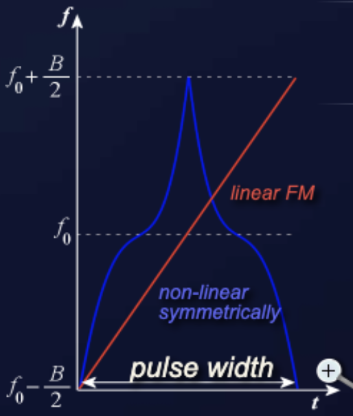
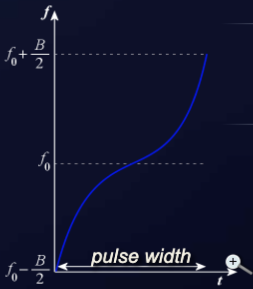
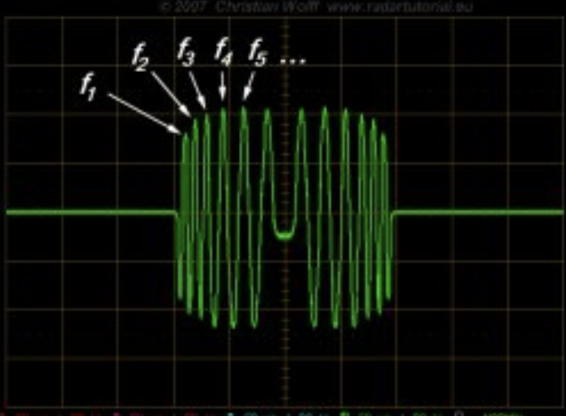
The phase-encoded pulse shape differs from the frequency-modulated pulse shape in that the long pulse is divided into smaller sub-pulses of equal length whose carrier frequency does not change. Within each sub-pulse the phase is constant. These sub-pulses each represent a range cell, the smallest resolvable distance. So that sub-pulses of length tau-c can be detected, the transmitter and receiver must have a bandwidth of B = 1 / tau-c. A phase jump can be programmed between sub-pulses but does not have to occur at each change.
This phase jump is usually linked with a binary code, a sequence of logical states. Depending on the code, the phase of the transmitted signal is switched between 0 and 180 degrees. The selection of a suitable code from these so-called 0/pi phases is very critical, measured at the level of expected sidelobes. Several pulse patterns in the Barker code have proven optimum. A computer-aided study examined up to 6,000 different Barker codes and concluded that only 13 have a maximum signal-to-sidelobe ratio.
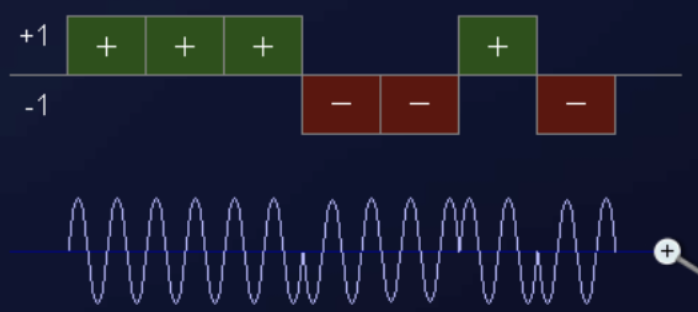
It can be concluded that no greater number of pulses than 13 is possible for Barker codes, and that 13 sub-pulses therefore represents a maximum achievable pulse compression ratio of 13:1.
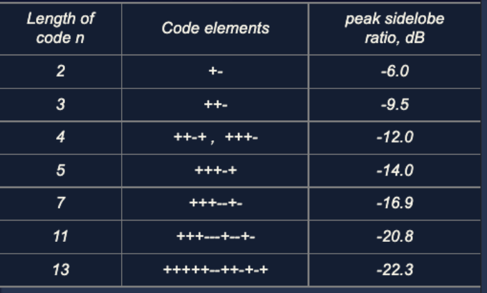
To take better advantage of the favorable conditions of the Barker codes, it is possible to combine them. For example, an 11-digit Barker code can be used, and within each of its 11 partial pulses, a further 11-digit Barker code is used. This results in a division into a total of 121 sub-pulses. Unfortunately, this gives the sidelobes an uneven size.
Check your understanding. Five quick questions on radar transmitters, auto-scored, with your answers saved on this device.